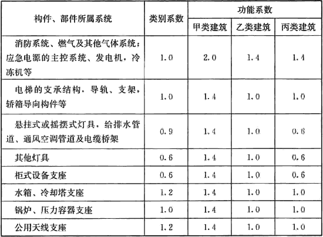
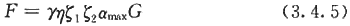
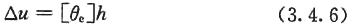
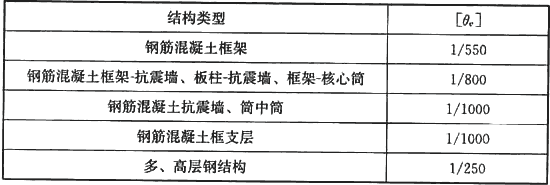
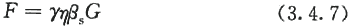

3．4 地震作用计算
3．4．1 建筑机电工程设备应根据所属建筑抗震要求、所属部位采用不同功能系数、类别系数进行抗震计算，建筑机电设备构件的类别系数和功能系数可按表3．4．1的规定确定，并应符合下列规定：
1 高要求时，外观可能损坏但不影响使用功能和防火能力，可经受相连结构构件出现1．4倍以上设计挠度的变形，其功能系数应大于等于1．4；
2 中等要求时，使用功能基本正常或可很快恢复，耐火时间减少1／4，可经受相连结构构件出现设计挠度的变形，其功能系数应取1．0；
3 一般要求时，多数构件基本处于原位，但系统可能损坏，需修理才能恢复功能，耐火时间明显降低，只能经受相连结构构件出现0．6倍设计挠度的变形，其功能系数应取0．6。
表3．4．1 建筑机电设备构件的类别系数和功能系数

3．4．2 当计算两个连接在一起、抗震措施要求不同的建筑机电设备时，应按较高要求进行抗震设计。建筑机电设备连接损坏时，不应引起与之相连的有较高要求的机电设备失效。
3．4．3 下列建筑机电设备应进行抗震验算：
1 7度～9度时，电梯提升设备的锚固件、高层建筑上的电梯构件及其锚固；
2 7度～9度时，建筑机电设备自重大于1．8kN或其体系自振周期大于0．1s的设备支架、基座及其锚固。
3．4．4 建筑机电工程的地震作用计算方法，应符合下列规定：
1 各构件和部件的地震力应施加于其重心，水平地震力应沿任一水平方向；
2 建筑机电工程自身重力产生的地震作用可采用等效侧力法计算；对支承于不同楼层或防震缝两侧的建筑机电工程，除自身重力产生的地震作用外，尚应同时计算地震时支承点之间相对位移产生的作用效应；
3 建筑机电设备(含支架)的体系自振周期大于0．1s，且其重力大于所在楼层重力的1％，或建筑机电设备的重力大于所在楼层重力的10％时，宜进入整体结构模型进行抗震计算，也可采用楼面反应谱方法计算。其中，与楼盖非弹性连接的设备，可直接将设备与楼盖作为一个质点计入整个结构的分析中得到设备所受的地震作用。
3．4．5 当采用等效侧力法时，水平地震作用标准值宜按下式计算：

式中：F——沿最不利方向施加于机电工程设施重心处的水平地震作用标准值；
γ——非结构构件功能系数，按本规范第3．4．1条执行；
η——非结构构件类别系数，按本规范第3．4．1条执行；
ξ1——状态系数；对支承点低于质心的任何设备和柔性体系宜取2．0，其余情况可取1．0；
ξ2——位置系数，建筑的顶点宜取2．0，底部宜取1．0，沿高度线性分布；对结构要求采用时程分析法补充计算的建筑，应按其计算结果调整；
αmax——地震影响系数最大值；可按本规范第3．3．5条中多遇地震的规定采用；
G——非结构构件的重力，应包括运行时有关的人员、容器和管道中的介质及储物柜中物品的重力。
3．4．6 建筑机电工程设施或构件因支承点相对水平位移产生的内力，可按该构件在位移方向的刚度乘以规定的支承点相对弹性水平位移计算，并应符合下列规定：
1 建筑机电工程设施或构件在位移方向的刚度，应根据其端部的实际连接状态，分别采用刚性连接、铰接、弹性连接或滑动连接等简化的力学模型；
2 分段防震缝两侧的相对水平位移，宜根据使用要求确定；相邻楼层的相对弹性水平位移△u，应按下式计算：

式中：[θe]——弹性层间位移角限值，宜按表3．4．6采用；
h——计算楼层层高(m)。
表3．4．6 弹性层间位移角限值

3．4．7 当采用楼面反应谱法时，建筑机电工程设施或构件的水平地震作用标准值宜按下式计算：

式中：βs——建筑机电工程设施或构件的楼面反应谱值。